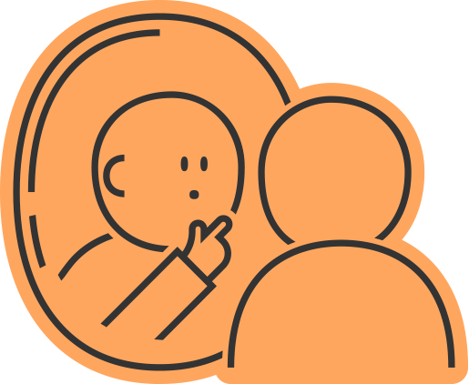

상황 인식하기

성폭력 피해를 입은 나는 지금 심리적, 신체적으로 충격을 받은
상태입니다.
충격은 피해 정도와 평소 상태에 따라 다양한 방식으로
나타납니다.
중요한 것은 지금 나의 상태를 보살피는 것입니다.
지금 나의 상태는 어떤가요?
실랑이를 하다가 멍이 들었어요
구타를 당해서 피가 나요
몸에 상처가 났어요
잠이 잘 오지 않아요/잠을 너무 많이 자요
밥을 먹고 싶지 않아요
아무것도 하고 싶지 않아요
나에게 스스로 상처를 냈어요
죽고 싶다는 생각이 들어요
혼자 견디기가 어려워요
학교/회사에 가기가 힘들어요
집에 가해자가 있어요
나에 대한 소문이 돌아요